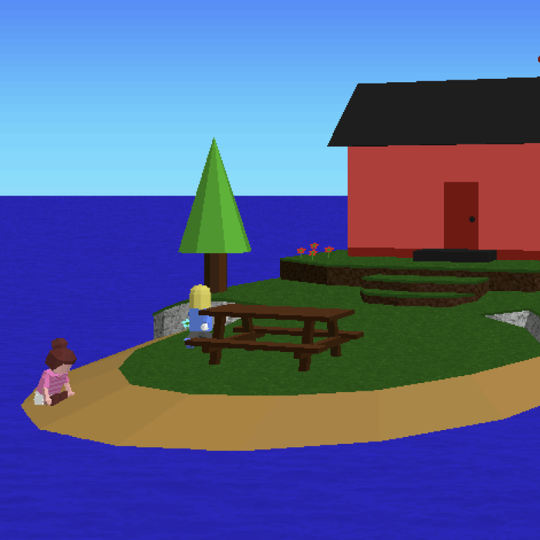
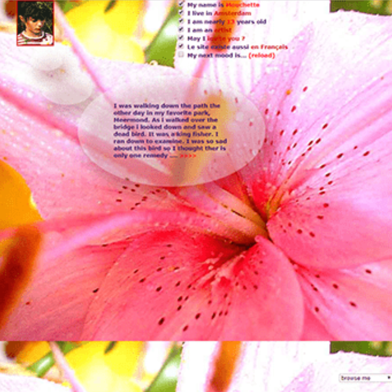
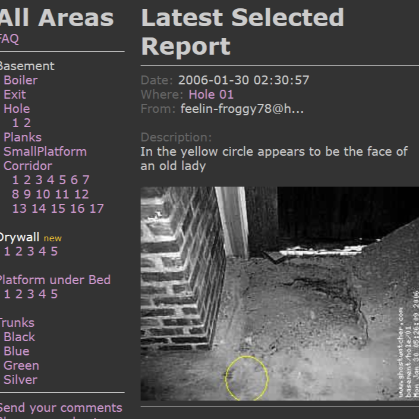

This is a collection of net art works that negotiate our identities online and offline, and showcase how the internet is used to construct identities that are both heavily obfuscated and altered but still reveal truths about the internality behind them. There is also an overarching thematic thread between all of them in the presence of ghosts, literal or figurative, that exist within the context of these online spaces and nowhere else. The internet is frequently framed as a place that we go to and visit, and like any other place, can develop the association of being haunted. This is something that is only accentuated by the questionable nature of people online, where it can be easy to fabricate parts of someone, imitating people or inventing new people entirely. I wanted to take all of these pieces and tie them together in order to display the similarities between online identities and the cultural role of the ghost as a myth or an archetype.
3d workers island is a web narrative piece that follows a forum that develops extreme and nonsensical theories about their favorite game being haunted by the ghost of a dead child.
Mouchette.org is a fictional blog ran by a thirteen year old girl fixated on violence that incentivizes the reader to engage in careful scrutiny of who its author could be.
Ghostwatcher.com is a long running website that invites users to review footage from the home of the artist, June Houston, and then report ghost encounters.